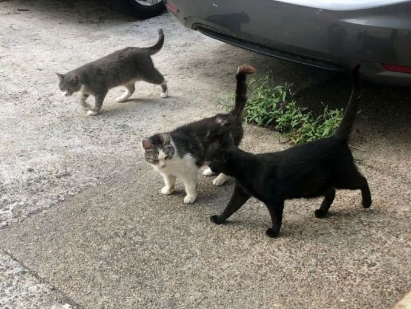
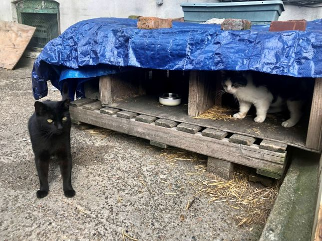
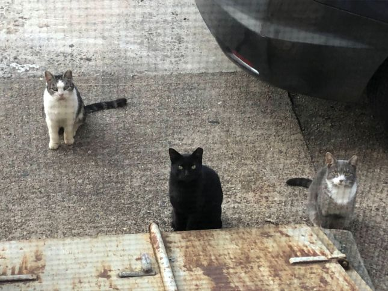

Trap-Neuter-Return (TNR)

TNR is a vital part of supporting cat communities.
Trap–Neuter–Return (TNR) is a humane, effective, and widely practiced method for managing and reducing
populations of feral and community cats (cats that live outdoors and are not socialized to humans). Instead
of euthanizing these cats, TNR focuses on stabilizing the colony and improving their health and welfare.

TNR certified volunteers follow the same process to safely handle feral and community cats.
-
Trap: Volunteers or animal welfare workers humanely trap the cats using live traps (often baited
with food).
-
Spay/Neuter: The cats are taken to a veterinarian to be spayed or neutered, vaccinated (commonly for
rabies and FVRCP), and sometimes treated for parasites or minor injuries.
-
This greatly reduces the number of kittens on the streets and helps with the overpopulation
crisis.
- Cats that are fixed are less territorial, leading to fewer fights and risk of disease.
-
Ear-Tip: While under anesthesia, the tip of one ear (usually the left ear) is painlessly removed —
this is the universal sign that the cat has been sterilized and vaccinated.
-
Pro-tip: if you see a cat with an ear tip (as seen above) this likely means they are a
community cat
-
Return: After recovery, the cats are returned to their original outdoor location, where they are
often fed and monitored by caretakers.
